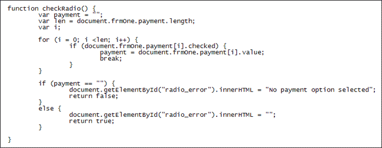
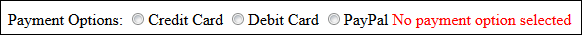

Radio Buttons
Seven part section: 1 2 3 4 5 6 7
Checking radio buttons on a form is a little trickier. You have to loop through each button, testing for a value of checked, which means it was selected. Only one radio button in a group can be selected, so if you find a value of checked you can break out of the loop.
If no radio button was checked then you can return a value of false. If any one of them is checked then you can return a value of true. Here's the code for your radio button function:

First we set up a variable called payment and set it to be a blank string. This will hold a value of checked if the user has selected a radio button and will be empty otherwise. The next line is this:
var len = document.frmOne.payment.length;
On the right of the equal sign we again try to access a form element. This time, the element we want has a name of payment. This came from the HTML:
<INPUT TYPE="Radio" Name="payment"
Value="CC">Credit Card
<INPUT TYPE="Radio" Name="payment" Value="DC">Debit
Card
<INPUT TYPE="Radio" Name="payment" Value="PP">PayPal
If you want to group radio buttons together you give them the same name. You can then access this name in your code. But look at what is now on the end:
document.frmOne.payment.length;
When we accessed the text box element like this we had value on the end. This time we have length. Length is how many radio button are in the group. We can use this length in the loop:
for (i = 0; i < len; i++) {
if ( document.frmOne.payment[i].checked ) {
payment = document.frmOne.payment[i].value;
break;
}
}
The loop goes round and around while the variable called i is less than the length of the radio buttons. Inside of the loop we have this:
if ( document.frmOne.payment[i].checked ) {
payment = document.frmOne.payment[i].value;
break;
}
This IF statements checks each radio button for a value of checked. But we can't just say:
document.frmOne.payment.checked
The payment part refers to the whole group of radio buttons. To get at each individual radio button you can use a pair of square brackets. Inside the square brackets you type a number. The number corresponds to a particular button. So payment[0] is the first button, payment[1] is the second button, and so on. If the IF statement detects that any one of these buttons has a value of checked it puts that value into the payment variable:
payment = document.frmOne.payment[i].value;
We can then break out of the loop because we know that the user has selected a radio button.
The IF statement after the loop checks what's inside the variable called payment. It does exactly the same thing as the email check box. The only difference is that it places an error message besides the radio buttons rather than besides the text box.
Test it out. Click your submit button without selecting a radio button. You
should see this:

Now select a payment option. Click the button again and the error message will disappear.
In the next part, we'll look at how to check dropdown lists with Javascripts.